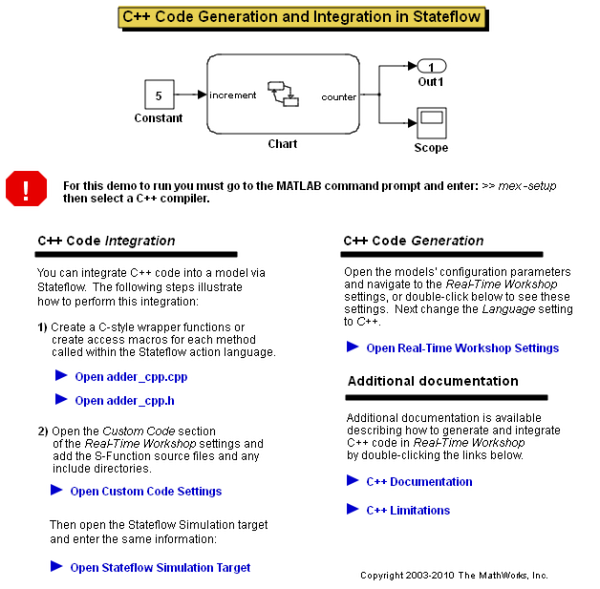
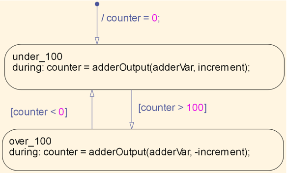
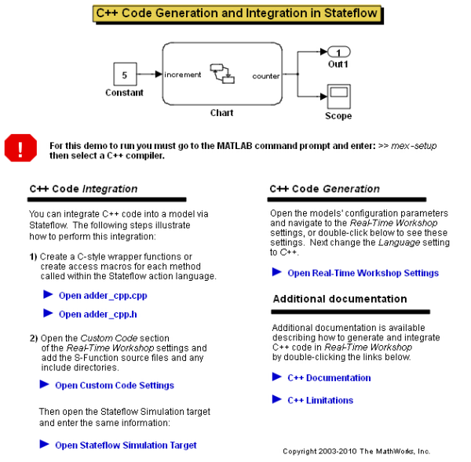
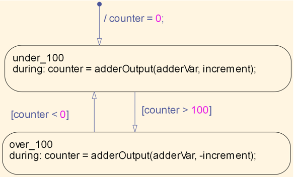

Including Custom C++ Code
This demonstration shows how custom C++ files can be used in a Stateflow® model. Specify the name and location of the files by editing Simulation target or RTW target.
 This demonstration shows how custom C++ files can be used in a Stateflow® model. Specify the name and location of the files by editing Simulation target or RTW target.
 